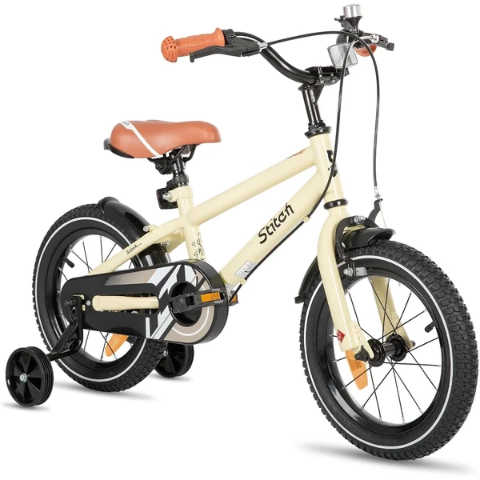
STITCH Bicicleta Infantil con Estabilizadores
Una bicicleta infantil disponible en varias tallas (14 a 20 pulgadas) con plataforma de entrenamiento para quienes empiezan a montar. Viene premontada en un 85% y con frenos de mano adaptados a manos pequeñas.
⭐ ¿Por qué nos gusta?
- ✔ Varias tallas según la edad del niño.
- ✔ Frenos de mano diseñados para manos pequeñas.
- ✔ Viene premontada en un 85%.
💬 Lo que más destacan las familias
Muchos padres coinciden en que la variedad de tallas facilita encontrar la adecuada sin dudas. El montaje resulta sencillo gracias a que la mayor parte ya viene ensamblada de fábrica.
Ver en Amazon
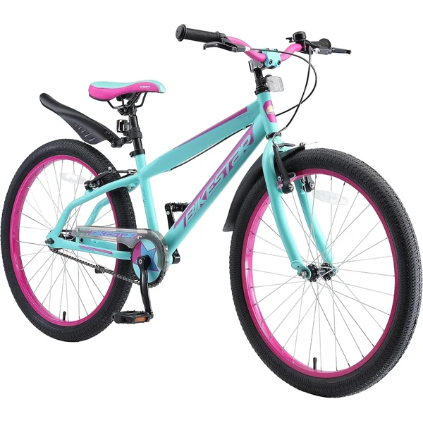
BIKESTAR Bicicleta Infantil Mountainbike 24 Pulgadas
Una bicicleta de montaña de 24 pulgadas con cuadro de aluminio ligero y manillar y sillín ajustables para acompañar el crecimiento del niño. Cuadro de acero muy resistente pensado para un uso intensivo.
⭐ ¿Por qué nos gusta?
- ✔ Cuadro de aluminio ligero y resistente.
- ✔ Manillar y sillín ajustables en altura.
- ✔ Pensada para crecer con el niño.
💬 Lo que más destacan las familias
Entre los comentarios más habituales aparece lo bien pensada que está la ergonomía entre sillín y manillar para una postura correcta. La ligereza del cuadro también se valora especialmente frente a otros modelos más pesados.
Ver en Amazon
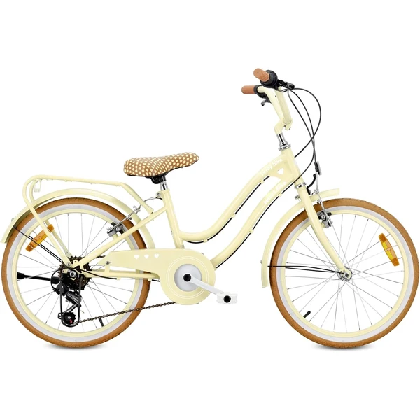
Bicicleta Heart Bike 6 Velocidades Shimano
Una bicicleta con sistema de 7 velocidades Shimano y puño giratorio, pensada para adaptarse a distintos terrenos sin necesidad de detenerse. Sillín y manillar ajustables para acompañar el crecimiento.
⭐ ¿Por qué nos gusta?
- ✔ 7 velocidades Shimano con cambio giratorio.
- ✔ Sillín y manillar ajustables en altura.
- ✔ Viene premontada en un 80%.
💬 Lo que más destacan las familias
Se repite bastante el comentario de que el cambio de marchas Shimano facilita mucho adaptarse a distintos terrenos sin esfuerzo. Los guardabarros y el portaequipajes incluidos también se valoran como un extra práctico.
Ver en Amazon
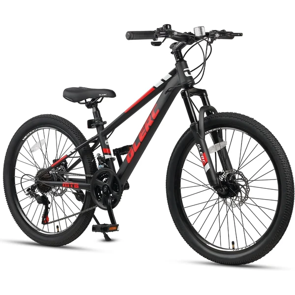
Glerc Skyline Bicicleta MTB 21 Velocidades
Una bicicleta de montaña con 21 velocidades, frenos de disco y horquilla con suspensión delantera para absorber los golpes de terrenos irregulares. Cuadro de acero de alta resistencia para aventuras todoterreno.
⭐ ¿Por qué nos gusta?
- ✔ 21 velocidades para distintos terrenos.
- ✔ Frenos de disco para un frenado preciso.
- ✔ Suspensión delantera que amortigua los golpes.
💬 Lo que más destacan las familias
Lo que más suele gustar es la sensación de seguridad que dan los frenos de disco frente a los frenos tradicionales. La suspensión delantera también se valora en rutas con terreno irregular o de montaña.
Ver en Amazon
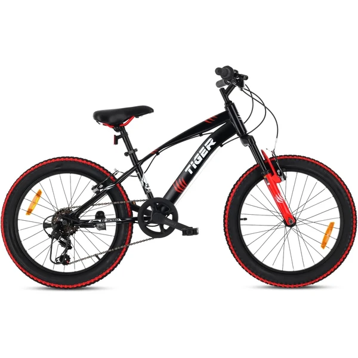
Tiger Bike Bicicleta Infantil 6 Velocidades
Una bicicleta de 20 pulgadas con cambio Shimano de 6 velocidades y neumáticos anchos tipo BMX que dan buen agarre y estabilidad. Amortiguador delantero y asiento ajustable para acompañar el crecimiento.
⭐ ¿Por qué nos gusta?
- ✔ Cambio Shimano de 6 velocidades.
- ✔ Neumáticos anchos tipo BMX, buen agarre.
- ✔ Amortiguador delantero para más comodidad.
💬 Lo que más destacan las familias
Una característica muy mencionada es la estabilidad que dan los neumáticos anchos tipo BMX en distintas superficies. El asiento y manillar ajustables permiten que dure varias temporadas sin necesidad de cambiarla.
Ver en Amazon
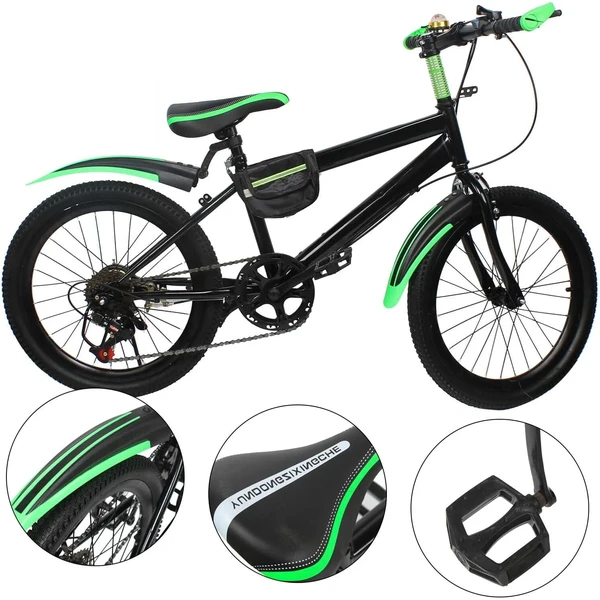
Bicicleta Infantil 7 Velocidades con Guardabarros
Una bicicleta con cuadro de acero al carbono y capacidad de carga de hasta 85 kg, con guardabarros, portabotellas y timbre incluidos. Sistema de 7 velocidades para adaptarse a distintas condiciones de la carretera.
⭐ ¿Por qué nos gusta?
- ✔ 7 velocidades para adaptarse al terreno.
- ✔ Incluye guardabarros, timbre y portabotellas.
- ✔ Cuadro robusto con capacidad de 85 kg.
💬 Lo que más destacan las familias
No es raro encontrar comentarios sobre lo completa que resulta de fábrica, con guardabarros y portabotellas ya incluidos. El cuadro robusto también transmite mucha confianza para el uso diario.
Ver en Amazon
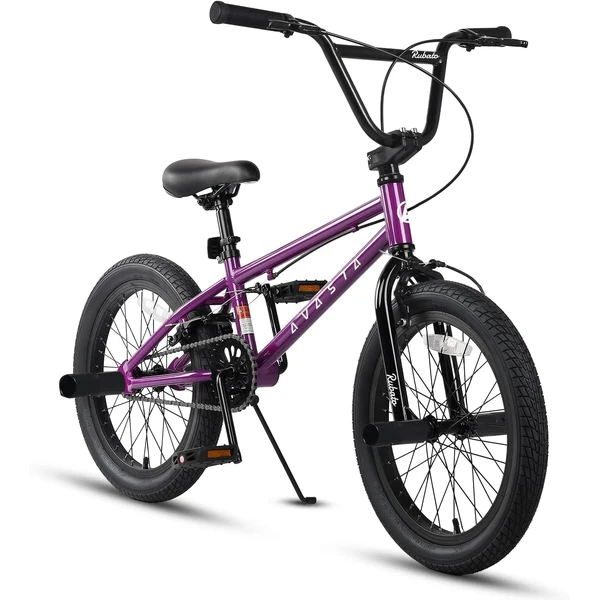
AVASTA Bicicleta BMX Freestyle
Una bicicleta BMX pensada para principiantes que quieren iniciarse en el freestyle, con cuadro de acero resistente y frenos de aluminio delantero y trasero. Incluye 4 ganchos BMX para trucos.
⭐ ¿Por qué nos gusta?
- ✔ Pensada especialmente para principiantes en BMX.
- ✔ Cuadro de acero resistente para uso intensivo.
- ✔ Incluye 4 ganchos BMX para trucos.
💬 Lo que más destacan las familias
Entre los comentarios más habituales aparece lo bien que aguanta el uso intensivo típico del BMX, incluso con caídas. Los ganchos incluidos se valoran como un buen punto de partida para aprender trucos básicos.
Ver en Amazon

HUDORA BigWheel Scooter 205
Un patinete robusto de aluminio con ruedas grandes de 205 mm y plataforma baja para una conducción estable. Ajustable en altura de 79 a 104 cm y plegable para guardarlo con facilidad.
⭐ ¿Por qué nos gusta?
- ✔ Ruedas grandes de 205 mm, muy estables.
- ✔ Ajustable en altura, sirve varios años.
- ✔ Plegable con correa de transporte incluida.
💬 Lo que más destacan las familias
Muchos padres coinciden en que las ruedas grandes marcan la diferencia frente a patinetes más pequeños, dando mucha más estabilidad. El sistema de plegado también se valora porque facilita guardarlo o llevarlo en el coche.
Ver en Amazon

Lionelo Luca Patinete Urbano XXL
Un patinete con ruedas grandes de 200 mm y amortiguación ShockResist en el manillar para reducir las vibraciones del terreno. Manillar ajustable en 3 alturas y plegado rápido tipo maleta con ruedas.
⭐ ¿Por qué nos gusta?
- ✔ Amortiguación ShockResist en el manillar.
- ✔ Ruedas grandes de 200 mm, alta velocidad.
- ✔ Se pliega como una maleta con ruedas.
💬 Lo que más destacan las familias
Entre los comentarios más habituales aparece lo cómoda que resulta la amortiguación del manillar en superficies irregulares. Su ligereza y el sistema de plegado tipo maleta también se valoran para el transporte diario.
Ver en Amazon
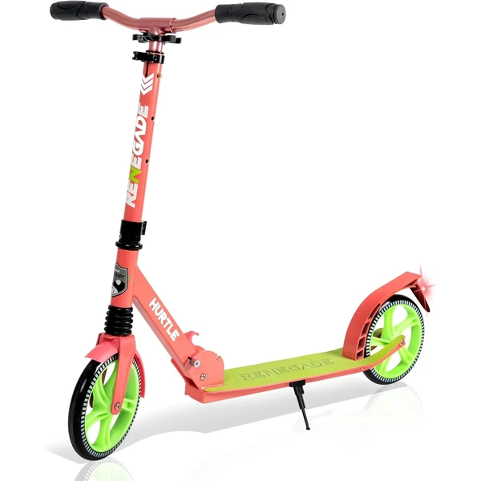
Hurtle Renegade Patinete Plegable
Un patinete plegable con plataforma de aleación ligera y manillar en forma de T ajustable a tres alturas. Incluye correa de transporte y freno de pie con reflectante en la rueda trasera.
⭐ ¿Por qué nos gusta?
- ✔ Manillar ajustable a tres alturas distintas.
- ✔ Diseño plegable con correa de transporte.
- ✔ Freno de pie con reflectante para más seguridad.
💬 Lo que más destacan las familias
Se repite bastante el comentario de que resulta muy cómodo de transportar gracias al diseño plegable y la correa incluida. La estabilidad en superficies irregulares también se menciona como un punto fuerte.
Ver en Amazon
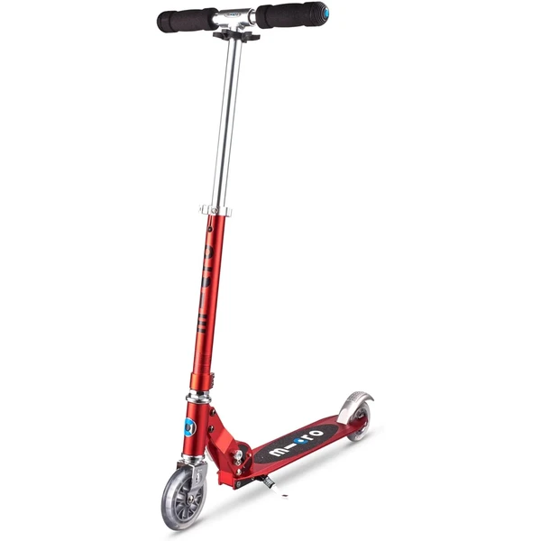
Micro Sprite Patinete Plegable
Un patinete ligero de aluminio (2,85 kg) con altura regulable de 63 a 95 cm, pensado para niños de 5 a 12 años. Rodamientos ABEC9 de alta calidad y rueda delantera con giro de 360°.
⭐ ¿Por qué nos gusta?
- ✔ Muy ligero, solo 2,85 kg de peso.
- ✔ Altura regulable para varios años de uso.
- ✔ Rodamientos ABEC9 para un deslizamiento suave.
💬 Lo que más destacan las familias
Lo que más suele gustar es lo ligero que resulta, facilitando que el propio niño lo transporte sin ayuda. La marca también se valora por la disponibilidad de recambios durante años tras la compra.
Ver en Amazon
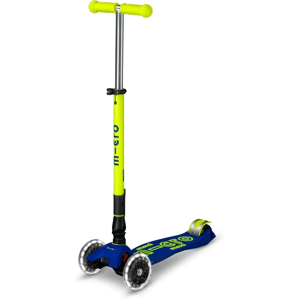
Micro Maxi Deluxe Patinete de 3 Ruedas
Un patinete de tres ruedas con sistema de giro por inclinación de peso, diseñado junto a pediatras para desarrollar coordinación y equilibrio. Ruedas delanteras con iluminación LED sin necesidad de pilas.
⭐ ¿Por qué nos gusta?
- ✔ Sistema de giro por inclinación, más seguro.
- ✔ Ruedas LED que se iluminan sin pilas.
- ✔ Diseñado junto a pediatras para el equilibrio.
💬 Lo que más destacan las familias
Una característica muy mencionada es lo seguro que resulta el sistema de giro por inclinación frente a los patinetes de dos ruedas. Las luces LED en las ruedas también generan mucho entusiasmo al usarlo de noche.
Ver en Amazon
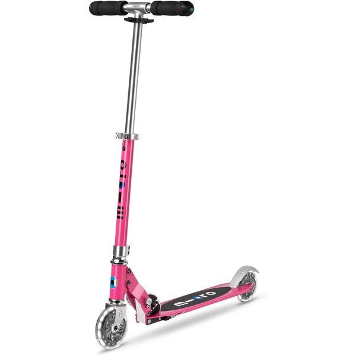
Micro Sprite LED Scooter
La misma base ligera y plegable del Micro Sprite, con ruedas que se iluminan al girar sin necesidad de pilas ni batería. Altura regulable de 63 a 95 cm para niños de 5 a 12 años.
⭐ ¿Por qué nos gusta?
- ✔ Ruedas con iluminación LED sin pilas.
- ✔ Muy ligero y completamente plegable.
- ✔ Altura regulable para varios años de uso.
💬 Lo que más destacan las familias
No es raro encontrar comentarios sobre lo mucho que engancha el efecto de las ruedas iluminadas al rodar. Mantiene la misma ligereza y calidad de construcción que el resto de la gama Micro.
Ver en Amazon
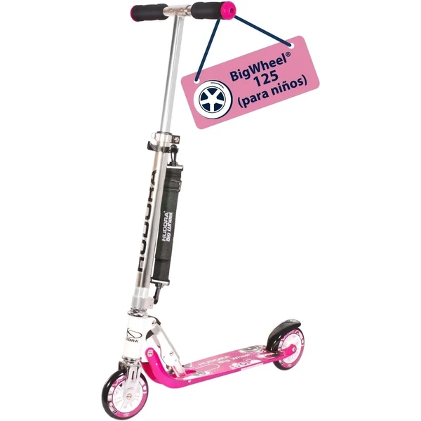
Hudora Scooter BigWheel 125
Un patinete de aluminio con ruedas de alto rebote que lo hacen estable y ágil a la vez. Freno de fricción trasero, guardabarros integrado y ajustable en altura de 69 a 95 cm.
⭐ ¿Por qué nos gusta?
- ✔ Ruedas de alto rebote, estables y ágiles.
- ✔ Guardabarros integrado para días de lluvia.
- ✔ Ajustable en altura, plegable y ligero.
💬 Lo que más destacan las familias
Muchos padres destacan el equilibrio entre estabilidad y agilidad que ofrecen sus ruedas, ideal para empezar a coger confianza. El guardabarros integrado también se agradece en días de lluvia.
Ver en Amazon
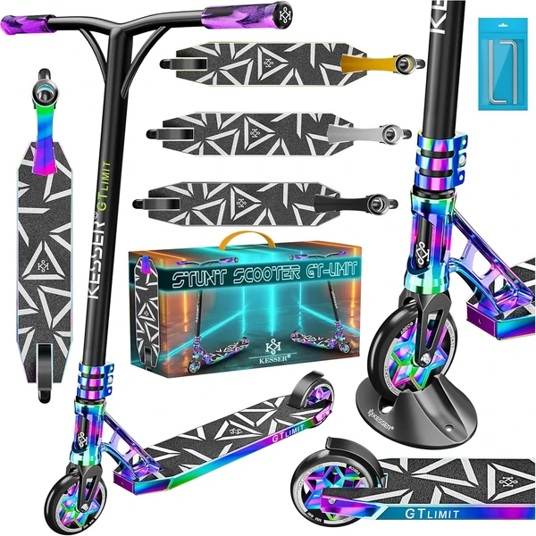
KESSER Patinete Acrobático GT-Limit
Un patinete acrobático con dirección de 360° pensado para hacer trucos en rampas, asfalto o pistas de entrenamiento. Chasis de aluminio muy ligero con ruedas de PU de alto rebote.
⭐ ¿Por qué nos gusta?
- ✔ Dirección de 360° para trucos y acrobacias.
- ✔ Chasis de aluminio muy ligero.
- ✔ Ruedas de PU con rodamientos ABEC-9.
💬 Lo que más destacan las familias
Entre los comentarios más habituales aparece lo bien que responde para hacer giros y trucos gracias a la dirección de 360°. Su ligereza también facilita maniobrarlo con soltura en rampas y pistas.
Ver en Amazon
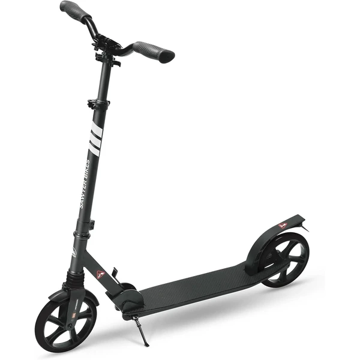
Sawyer Bikes Patinete Ajustable
Un patinete que se entrega ya montado, con manillar ajustable en tres posiciones y suspensión delantera para circular con comodidad por cualquier terreno urbano. Se pliega con una palanca y se transporta con correa incluida.
⭐ ¿Por qué nos gusta?
- ✔ Se entrega montado, listo para usar.
- ✔ Suspensión delantera para mayor comodidad.
- ✔ Manillar ajustable en tres alturas distintas.
💬 Lo que más destacan las familias
Lo que más suele gustar es que llegue completamente montado, sin necesidad de dedicar tiempo a ensamblarlo. La suspensión delantera también se valora especialmente al circular por aceras y pavimentos irregulares.
Ver en Amazon